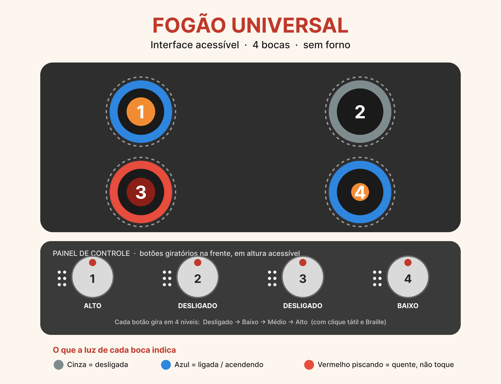

Redesign de uma interface acessível, segura e inclusiva
Projeto de Rodrigo Fonseca Guimarães — Desenvolvimento para Internet I · 2026_2
1 · Apresentação do Projetista
Nome: Rodrigo Fonseca Guimarães
Disciplina: Desenvolvimento para Internet I — 2026_2
Sou o autor deste projeto e atuei como projetista de interface, pensando o fogão
a partir das pessoas que vão usá-lo. Meu papel foi observar as dificuldades reais do dia a dia
e transformá-las em soluções simples, seguras e ao alcance de todos.
Acredito que projetar com empatia é colocar o ser humano no centro
de cada decisão. Um bom design não serve apenas a quem enxerga, ouve ou se movimenta com facilidade:
ele acolhe também quem tem baixa visão, daltonismo, surdez, deficiência motora, nanismo ou usa cadeira de rodas —
inclusive várias dessas condições ao mesmo tempo. Acessibilidade não é um detalhe extra;
é o que torna um objeto do cotidiano realmente de todos.
2 · Nova Interface do Fogão

Interface do Fogão Universal — imagem original criada pelo autor (pasta img/).
O conceito
O Fogão Universal tem quatro bocas (e não possui forno). Cada boca é
numerada de 1 a 4 com números grandes, de alto contraste e em alto-relevo.
Os controles ficam na frente do aparelho e em altura acessível, para que
pessoas em cadeira de rodas ou com nanismo alcancem sem esforço e sem risco de passar o braço sobre a chama.
Quais necessidades ela atende
👁️ Cegueira e baixa visão: marcações em Braille, alto-relevo, retorno sonoro e voz.
🎨 Daltonismo: o estado da boca nunca depende só da cor — usa também forma, brilho, padrão de piscada e número.
👂 Surdez: toda informação sonora tem um equivalente visual (luzes, símbolos e texto).
♿ Cadeirantes e nanismo: controles frontais em altura acessível.
✋ Deficiência motora: botões grandes, ergonômicos e com clique tátil a cada nível.
Usabilidade e acessibilidade aplicadas
A interface segue princípios básicos de usabilidade: informação redundante
(o mesmo aviso chega por som, luz, texto e toque), consistência
(todas as bocas funcionam do mesmo jeito), prevenção de erros (trava e desligamento
automático) e feedback imediato (a cada ação, o usuário percebe uma resposta clara).
O texto do próprio site usa fonte grande e alto contraste, também como escolha de acessibilidade.
Cores, formas, sons e texturas — escolhas estratégicas
Cor + forma + brilho: a chama é indicada por cor E pela espessura/brilho do anel de luz, então funciona mesmo para quem não distingue cores.
Som: um bip curto a cada nível, uma melodia ao acender e um alerta suave enquanto a superfície estiver quente.
Textura: uma faixa em relevo ao redor de cada boca marca a "zona quente" pelo tato.
Texto e símbolos: números grandes e o símbolo de atenção ⚠ reforçam o aviso visual.
Estados do anel de luz de cada boca
Estado
Luz
Padrão
Som
Desligada
Apagada
—
—
Acendendo
Azul
Pisca devagar
"tec-tec"
Ligada (baixo → alto)
Azul
Brilho aumenta com a chama
Bip curto ao mudar de nível
Quente (segurança)
Vermelha
Pisca rápido + símbolo ⚠
Alerta suave até esfriar
3 · Manual de Utilização
Guia simples e acessível para usar o Fogão Universal. Lembre-se: este fogão não tem forno.
Os comandos
Botão giratório (um por boca): gire para escolher entre Desligado · Baixo · Médio · Alto. Cada posição tem marca em Braille e alto-relevo, e dá um clique ao encaixar.
Anel de luz: mostra o estado da boca (veja a tabela da seção anterior).
Voz (opcional): ao girar, o fogão anuncia em voz alta, ex.: "Boca 1, chama média".
Passo a passo — acender uma boca
Coloque a panela sobre a boca desejada (por exemplo, a Boca 1).
Segure o botão giratório grande à frente dessa boca.
Gire da posição Desligado até Baixo. Você vai sentir um clique.
O anel de luz pisca em azul e você ouve "tec-tec": a boca está acendendo.
Quando a chama firmar, a luz fica azul contínua e toca uma melodia curta. Pronto para cozinhar!
Ajustar a temperatura (intensidade da chama)
Gire o botão para Médio ou Alto para aumentar a chama.
A cada nível, o fogão dá um bip curto e o brilho do anel aumenta.
Para diminuir, gire no sentido contrário, de volta para Baixo.
Desligar uma boca
Gire o botão de volta até a posição Desligado (clique final).
A chama apaga, mas a superfície continua quente: o anel fica vermelho piscando com o símbolo ⚠ e um alerta suave, até esfriar.
Só toque a boca quando o anel apagar por completo.
Dicas de segurança 🛡️
Trava infantil: segure qualquer botão por 3 segundos para travar/destravar o fogão.
Desligamento automático: se não houver panela ou se ficar ligado tempo demais, a boca desliga sozinha.
Sensor de gás: em caso de vazamento, soa um alarme e a luz vermelha pisca. Abra as janelas e não acione interruptores.
Zona quente: a faixa em relevo ao redor da boca avisa, pelo tato, onde é perigoso encostar.